01
DHT22 — Temperatura e Umidade

Categoria: Temperatura e Umidade
Conceito
Sensor digital de alta precisão para medição de temperatura e umidade relativa do ar.
Princípio de funcionamento
Utiliza um sensor capacitivo para medir umidade e um termistor NTC para temperatura, com conversão digital interna.
Especificações técnicas
- Temperatura: -40 a 80°C
- Umidade: 0% a 100%
- Precisão: ±0,5°C / ±2% UR
- Taxa de leitura: 0,5 Hz
Tipo de sinal
Digital
Aplicações
- Estações meteorológicas
- Controle ambiental industrial
- Agricultura inteligente
Exemplo de uso
Monitoramento climático em estufas automatizadas
Fabricantes
Aosong (AM2302)